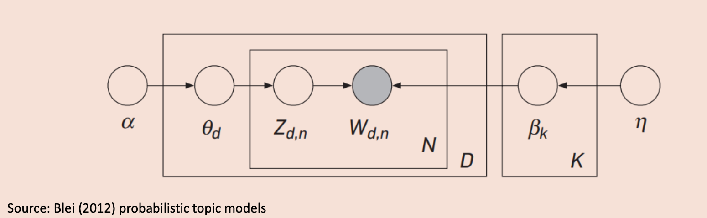

Lecture 2
Language Modeling and Probability Foundations
Sequence Modeling and Prediction
Language models predict the next word in a sequence given the preceding words. This is typically modeled using conditional probability:
语言模型的基本任务是：根据前面的词来预测下一个词。用Conditional Probability表示：
\[ P(w_5 \mid w_1, w_2, w_3, w_4) \]
This expresses the probability of the 5th word given the first four.
Example:
Sentence: “Luck is what happens when preparation meets opportunity.”
在“Luck is what happens”之后出现“when”的概率是多少？
Chain Rule of Probability
To compute complex conditional probabilities, we use the chain rule:
为了计算复杂的条件概率，我们使用概率的Chain Rule：
- Basic rule: \(P(A \cap B) = P(A) P(B|A)\)
- Conditional probability definition: \(P(B|A) = \frac{P(A \cap B)}{P(A)}\)
- Generalized form: \(P(A \cap B \cap C) = P(C|B \cap A) P(B|A) P(A)\)
In the context of language:
目标是估计：
\[ P(\text{when} \mid \text{happens}, \text{what}, \text{is}, \text{luck}) \]
使用chain rule展开：
\[ P(\text{when}) = P(\text{when} \mid \text{happens} \cap \text{what} \cap \text{is} \cap \text{luck}) \\ \cdot P(\text{happens} \mid \text{what} \cap \text{is} \cap \text{luck}) \\ \cdot P(\text{what} \mid \text{is} \cap \text{luck}) \\ \cdot P(\text{is} \mid \text{luck}) \\ \cdot P(\text{luck}) \]
这就是语言模型中常用的思路：将一个句子中各个词的联合概率转化为一系列条件概率的乘积。
Perplexity and Cross-Entropy
Perplexity
Perplexity evaluates how well a probability model predicts a sample:
Perplexity = 2 raised to the cross-entropy of the model
Perplexity衡量的是模型对测试集的“困惑”程度，越小越好。
它等价于模型每预测一个词时的不确定度。
\[ \text{Perplexity} = 2^{-\frac{1}{W} \sum_{k=1}^{n} \log P(w_k)} \]
其中：
- \(W\)：测试集中单词总数
- \(P(w_k)\)：模型给第 \(k\) 个词的概率预测
Cross-Entropy
Cross-entropy quantifies the average number of bits needed to encode data from a distribution \(\tilde{p}\) using a model \(q\):
交叉熵（Cross-Entropy）用来衡量一个分布 \(\tilde{p}\) 和模型分布 \(q\) 之间的距离：
\[ H(\tilde{p}, q) = -\sum_{i=1}^N \tilde{p}(x_i) \log_2 q(x_i) \]
其中：
- \(\tilde{p}(x_i)\)：经验概率（词 \(x_i\) 的出现频率）
- \(q(x_i)\)：模型预测的概率
和 Perplexity 的关系：
\[ \text{Perplexity} = 2^{\text{Cross-Entropy}} \]
KL Divergence (Relative Entropy)
KL 散度衡量一个近似分布 \(q\) 与真实分布 \(p\) 的差异。它不对称，但如果两者相等，KL 散度为 0。
公式：
\[ D_{KL}(p \parallel q) = \sum_{i=1}^N p(x_i) \log \left( \frac{p(x_i)}{q(x_i)} \right) \]
- \(p(x_i)\)：真实分布
- \(q(x_i)\)：模型的近似分布
用途：KL 散度在训练过程中常用于优化目标函数，比如通过最小化 KL 散度来逼近真实分布。
Text Representation Models
Bag-of-Words (BoW)
Converts text into vectors based on word occurrence counts.
BoW（词袋模型）将文本向量化，每个维度表示词表中一个词在句子中出现的频率。
例子说明：
句子：
I WOULD NOT, COULD NOT IN THE RAIN.
NOT IN THE DARK. NOT ON A TRAIN.被转换为两个向量：
[1, 1, 1, 2, 1, 1, 1, 1, 0, 0, ..., 0]
[0, 0, 0, 2, 1, 1, 0, 1, 1, 1, ..., 0]每个数表示词表中对应单词在该“文档”（即句子）中出现的次数。
Limitations of BoW
BoW 的主要缺点：
- 不考虑语义（Semantic meaning）：忽略上下文，比如“我爱你”和“你爱我”会被视为相同向量。
- 维度高（Vector size）：词表大时，向量稀疏、占用资源多。
TF-IDF (Term Frequency-Inverse Document Frequency)
Gives less importance to common words:
目的：降低高频无意义词（如 “the”, “and”）的权重，提高有区分度的词的重要性。
定义：
- TF（Term Frequency）：词在文档中的频率；
- IDF（Inverse Document Frequency）：词在整个文档集中出现的“逆频率”。
公式：
\[ \text{TF-IDF}(t, d) = tf(t, d) \cdot \log \left( \frac{N}{df(t)} \right) \]
其中：
- \(t\)：词
- \(d\)：文档
- \(df(t)\)：包含该词的文档数
- \(N\)：文档总数
Normalized Term Frequency
为了解决文档长短对词频带来的偏差，可以进行规范化处理：
对数缩放（Log Normalization）： \(\log(1 + f_{t,d})\)
最大值归一化（Max Normalization）：
\[ tf(t,d) = 0.5 + 0.5 \cdot \frac{f_{t,d}}{\max \{f_{t',d} : t' \in d\}} \]
N-gram Models
Bi-grams and N-grams
Bi-gram（双词模型）解决 BoW 忽略词序的问题，将每两个词作为一个单元进行建模。
例如：
"Luck is", "is what", "what happens", ...N-gram 一般化
N-gram 是对 Bi-gram 的拓展，使用前 \(N-1\) 个词预测当前词。
数学表达式：
- Unigram: \(P(w_i) = \frac{\text{Count}(w_i)}{\sum_j \text{Count}(w_j)}\)
- Bigram: \(P(w_i | w_{i-1}) = \frac{\text{Count}(w_{i-1}, w_i)}{\text{Count}(w_{i-1})}\)
- N-gram: \(P(w_1^n) = \prod_{k=1}^{n} P(w_k | w_{k-1})\)
表示整句话的概率是各个词的条件概率连乘。
Out-of-Vocabulary Words（词表外词）
当训练集中没有出现的词叫 OOV（Out-of-Vocabulary），这会导致概率为零。
解决办法：
扩大语料库（Increase corpus size）
跳过缺失的 n-gram（Leap over missing n-grams）
使用平滑技术（Smoothing），如： \(P_{\text{Laplace}}(w_i) = \frac{c_i + 1}{N + V}\) 其中：
- \(c_i\)：词 \(w_i\) 出现次数
- \(N\)：词总数
- \(V\)：词表大小
Sentiment Analysis and Semantic Orientation
Definition
Semantic orientation analyzes sentiment strength and direction in text.
语义倾向（Semantic Orientation）用于判断文本中单词或短语的情绪极性和强度。
Key dimensions:
- Subjectivity: objective vs subjective （客观 vs 主观）
- Polarity: negative vs positive （负面 vs 正面）
- Intensity: strength (e.g. “very good” vs “good”)
Lexicon-Based Approach
基于人工或半自动构建的情感词典，如 Hu & Liu（2004）的方法：
- 提取 意见词（opinion words），如形容词（good, bad, amazing）；
- 使用 WordNet 获取同义词/反义词，推断其情绪倾向；
- 逐词分析并合并为句子级别判断。
WordNet Role
WordNet 是一个词汇知识库，它用语义关系连接单词，包括：
- Synonym（同义词）：形成同义集 Synsets
- Antonym（反义词）：如 wet 与 dry
- 上下位关系（Hypernym-Hyponym）：如 furniture > bed
- 部分整体关系（Meronym）：如 chair 与 backrest
Limitations of Lexicon Methods
引用自 Agarwal & Mittal（2015）：
主要问题：
- 依赖训练语料库中的已有词汇；
- 对新词、俚语、特定领域术语无能为力；
- 若词典覆盖不全，系统容易失误；
- 文本长度越短，语义越难判断准确。
Summary Table
| Topic | Key Concept | Limitation |
|---|---|---|
| Language Modeling | Predict next word | Sensitive to data sparsity |
| Perplexity | Measures model’s confusion | Lower = better |
| BoW | Simple vector representation | Ignores word order |
| TF-IDF | Penalizes common words | Still context-free |
| N-gram | Uses local context | Struggles with OOV words |
| Lexicon Sentiment | Dictionary-based polarity | Poor generalization |
What Are Topic Models?
Topic models are statistical methods that discover abstract “topics” in a collection of documents. The most well-known model is Latent Dirichlet Allocation (LDA). Documents are modeled as mixtures of topics, and each topic is characterized by a distribution over words.
是一类无监督学习方法，能够从文本集合中自动发现潜在话题。
- doc = 多个主题的混合；
- topic = 一组词的概率分布。
LDA Graphical Structure & Plate Notation

Figure: LDA model structure (adapted from Blei et al., 2003)
- α：hyperparameter for Dirichlet distribution of topic probabilities, 控制文档中主题分布的 Dirichlet 先验
- θ_d：topic probabilities for document d of the D documents, 第 d 篇文档的主题分布
- z_dn：第 d 篇文档中第 n 个词的主题
- β_k：word probabilities given topic k, 第 k 个主题下的词分布
- w_dn：实际生成的词
- η：控制 β 的 Dirichlet 超参数
生成过程：
- 对每篇文档 d，从 Dirichlet(α) 抽样出 θ_d
- 对每个词，从 Multinomial(θ_d) 选择主题 z_dn
- 再从 Multinomial(β_{z_dn}) 中采样出词 w_dn
LDA as Soft Clustering
LDA 是一种Soft Clustering
- Each word is probabilistically assigned to a topic.
- Unlike hard clustering (e.g. K-means), LDA allows multiple topics per document.
- 常见的聚类模型，比如 K-means，是一种Hard Clustering,每个文档只属于一个类。
- LDA是Soft Clustering: 每个词都有一个属于不同主题的概率;
- 每个词是从多个主题中以概率方式抽样得到的；
- 每个文档可能属于多个主题；
- 每个文档的主题分布是一个 Multinomial, 参数来自 Dirichlet
LDA as Dimension Reduction
LDA 也可以看作是一种降维技术： * 把高维的词频向量映射为低维的主题空间； * 非线性降维 \[ \mathbb{E}[w] = \theta^\top \beta \]
- θ：文档的主题分布（类似 PCA 中的因子得分）
- β：主题中的词分布（类似因子载荷）
与 PCA 的异同：
| 比较 | PCA | LDA |
|---|---|---|
| 分量符号 | 可正可负 | 都是非负 |
| 模型类型 | 线性代数 | 贝叶斯生成模型 |
| 表达方式 | 向量投影 | 概率生成 |
| 数据类型 | 连续数据 | 离散数据（如文本） |
| 是否考虑词共现 | 否 | 是（通过主题） |
- LDA与 PCA 类似，但：
- LDA 的分量是正数
- 用概率建模而非线性投影
替代方案：Matrix Factorization、Alternating Least Squares 交替最小二乘（ALS）
Variational Inference in LDA
Why Variational Inference (VI)?
- Posterior \(p(\theta, z \mid w)\) is intractable.
- VI approximates it with simpler \(q(\theta, z)\) by minimizing KL divergence.
VI Mechanism: * 贝叶斯推断要求计算后验分布，但没有解析解； \[ p(\theta \mid \text{data}) = \frac{p(\text{data} \mid \theta) p(\theta)}{p(\text{data})} \]
VI 把推断问题转为优化问题：
- 选一个可处理的分布族 \(q\)，使其最接近真实后验。
- 用变分参数 \(\gamma\) 和 \(\phi\) 表达文档的主题表示和词的主题分布。
Use mean-field factorization: \(q(\theta, z) = q(\theta) \prod_n q(z_n)\)
Optimize parameters \(\gamma, \phi\)
Iteratively update:
- \(\phi_{ni} \propto \beta_{i w_n} \exp(\Psi(\gamma_i))\)
- \(\gamma_i = \alpha_i + \sum_n \phi_{ni}\) ### 两种主要的后验近似方法
1. MCMC（Markov Chain Monte Carlo）
样本采样模拟后验分布；
理论上准确（收敛到真实后验），但：
- 计算代价高；
- 收敛慢；
- 对于大规模文档数据不现实。
2. Variational Inference（VI）
VI 的基本思想是：
与其反复抽样后验分布，不如选择一个容易处理的分布族 \(q(\theta, z)\)，通过优化来逼近真实后验 \(p(\theta, z \mid w)\)。
具体做法是：
- 选择一个易于计算的变分分布族 \(q(\theta, z)\)（如 Dirichlet × Multinomial）；
- 通过最小化 KL 散度（Kullback-Leibler Divergence）：
\[ q^*(\theta, z) = \arg\min_q \text{KL}(q(\theta, z) \| p(\theta, z \mid w)) \]
这个最优化问题等价于最大化 Evidence Lower Bound。
比较：
| 方法 | 优点 | 缺点 |
|---|---|---|
| MCMC | 精度高 | 慢，不适合大规模 |
| VI | 快，有解析形式 | 有偏差，依赖分布族 |
Extensions of LDA
| 扩展模型 | 描述 |
|---|---|
| CTM（Correlated Topic Model） | 使用 Logistic Normal 建模主题相关性 |
| Author-Topic Model | 每个作者拥有一个主题分布 |
| Dynamic Topic Model | 模型中主题会随时间变化 |
这些扩展往往破坏 Dirichlet 的简洁性质，使得推断变得更复杂（通常需要 MCMC 或 EP）
Sentence-Constrained LDA
SC-LDA 假设：一句话通常只讲一个主题，并且这个主题可能在下一句中延续。
- 每句 → 一个主题
- 更贴近用户在评论中的表达结构
- 可用于产品属性提取（如“屏幕、价格、电池”）
- 文档的主题分布可用于预测评分
- Each sentence tends to express one topic (Buschken & Allenby, 2016)
- Better topic-word tail modeling
- Improves interpretability & rating prediction
情感不是主题：
- 主题由“名词”驱动，情感由“形容词”驱动；
- 同一个主题可能包含褒贬不一的内容；
- 在大数据中可能学出“主题+情绪”复合结构（如“bad battery”）
Topic × Sentiment:
- 先识别句子的主题（SC-LDA）
- 对句子做情绪分类
- 将情绪与主题进行交互建模 → 方面级情感分析（Aspect-Based Sentiment Analysis）
Summary
| 主题 | 内容 |
|---|---|
| LDA 核心 | 主题分布 × 词分布（θ × β） |
| 推断方法 | VI（快） vs MCMC（准） |
| 模型结构 | 文档 = 多主题，词 = 从主题中抽样 |
| 变体 | CTM, Dynamic LDA, Author-Topic, SC-LDA |
| 进阶方向 | 加入情绪、时间、结构化先验 |
References
- Hu, M., & Liu, B. (2004). Mining and summarizing customer reviews.
- Agarwal, A., & Mittal, N. (2015). Text classification using machine learning methods.
- WordNet: https://wordnet.princeton.edu/